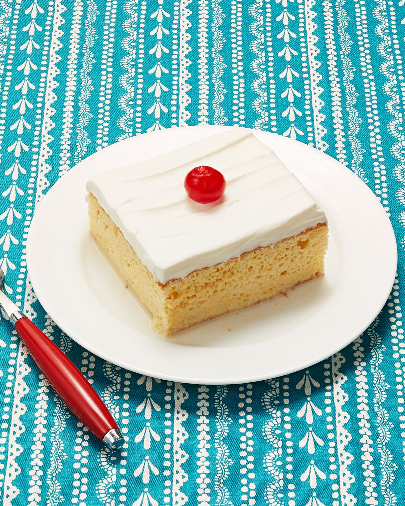

Tres Leches

Author: Rae Drummond
A sweet cake soaked in 3 milks and topped with a whipped icing
Ingredients
For Cake:
- 1 cup all-purpose flour
- 1 1/2 tsp baking powder
- 1/4 tsp salt
- 5 whole eggs
- 1 cup sugar, divided
- 1 tsp vanilla
- 1/3 cup milk
- 1 can evaporated milk
- 1 can sweetened, condensed milk
- 1/4 cup heavy cream
For Icing
- 2 cups cool whip or whipped cream
- 1/3 cup vanilla butter cream frosting
Directions:
- reheat oven to 350˚. Spray a 9 x 13 inch pan liberally until coated.
- Combine flour, baking powder, and salt in a large bowl. Separate eggs.
- Beat egg yolks with 3/4 cup sugar on high speed until yolks are pale yellow.
Stir in milk and vanilla. Pour egg yolk mixture over the flour mixture and
stir very gently until combined.
- Beat egg whites on high speed until soft peaks form. With the mixer on,
pour in remaining 1/4 cup sugar and beat until egg whites are stiff but not dry.
- Fold egg white mixture into the batter very gently until just combined.
Pour into prepared pan and spread to even out the surface.
- Bake for about 30 minutes or until a toothpick comes out clean.
Turn cake out onto a rimmed platter and allow to cool.
- Combine condensed milk, evaporated milk, and heavy cream in a small pitcher.
When cake is cool, pierce the surface with a fork several times.
Slowly drizzle all but about 1 cup of the milk mixture—try to get as much around the edges of the cake as you can.
- Allow the cake to absorb the milk mixture for 30 minutes.
To ice the cake, fold whipped cream with slightly warmed buttercream frosting until thick and spreadable.
- Spread over the surface of the cake. (optional Decorate cake with whole or chopped maraschino cherries.) Cut into squares and serve.